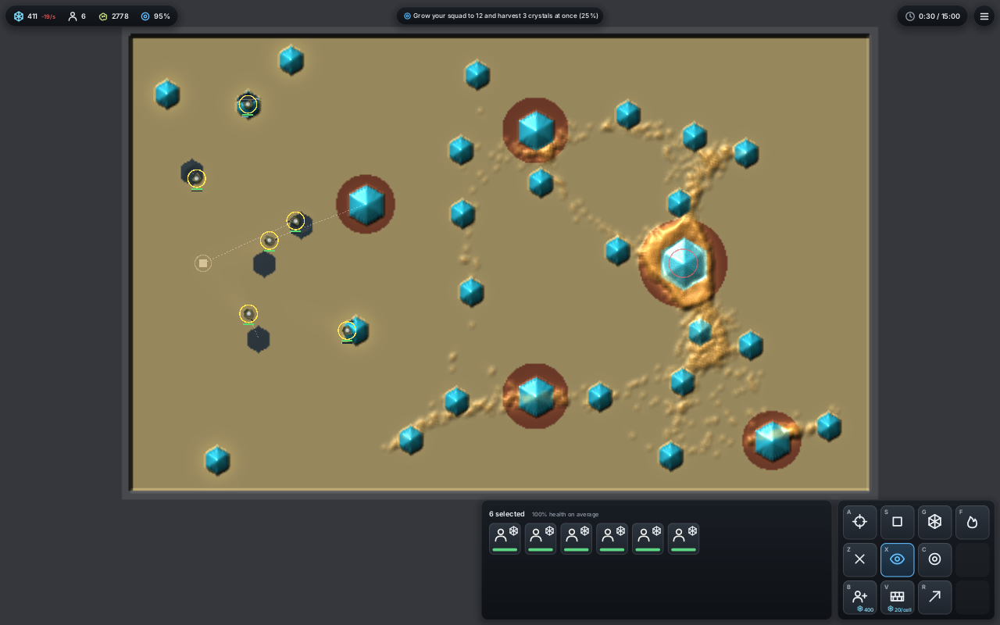
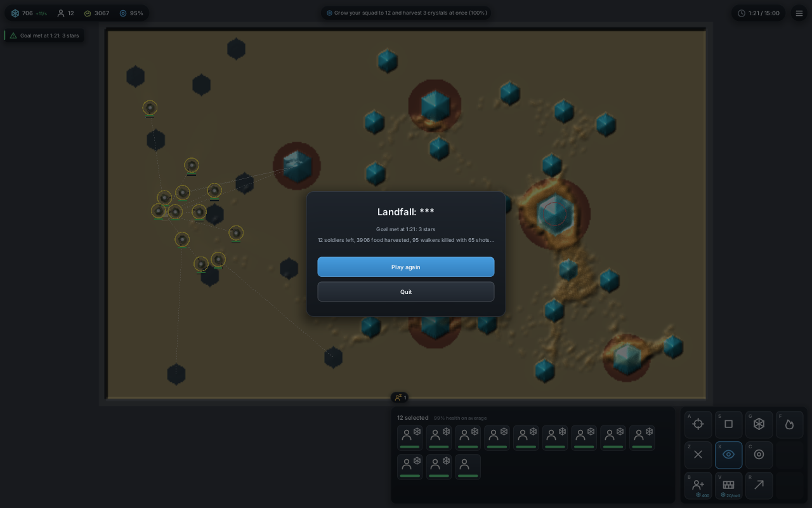
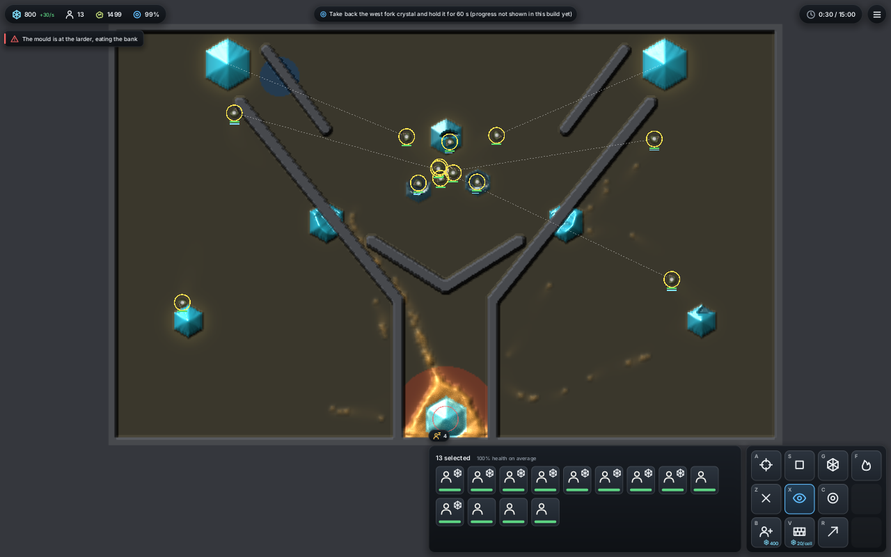
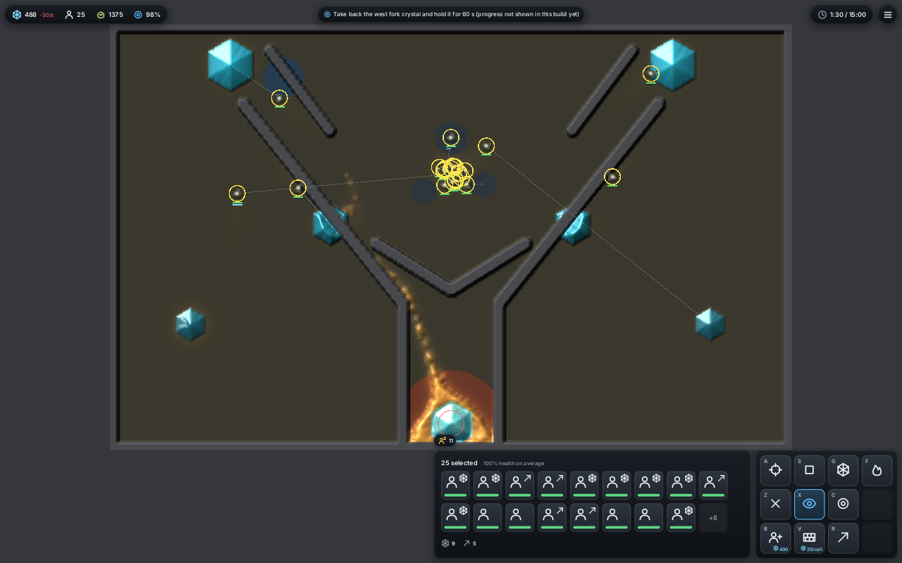
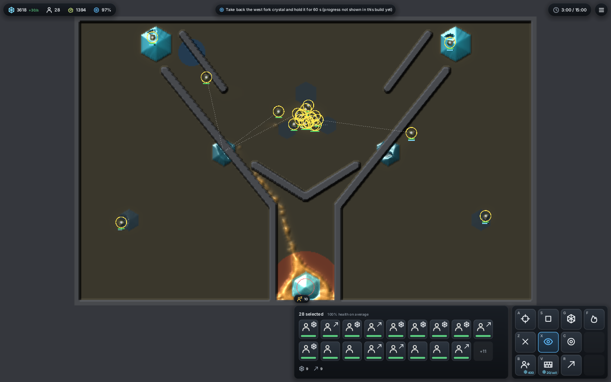
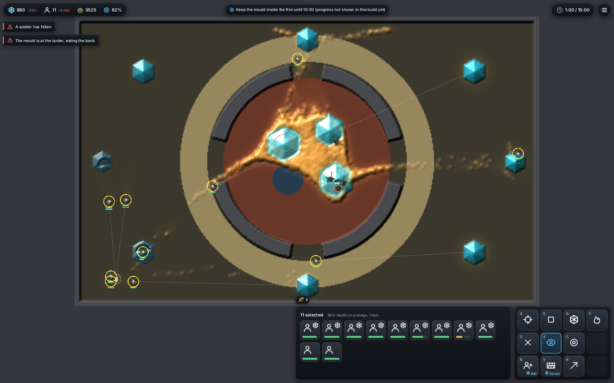
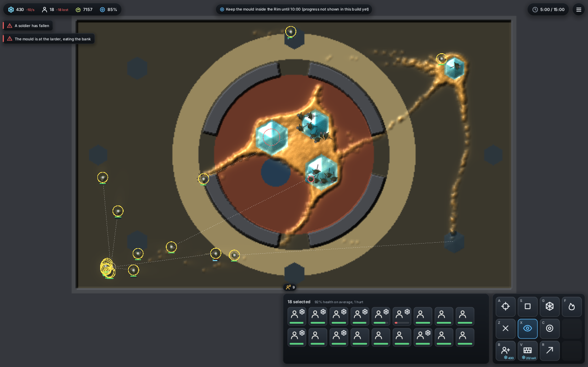
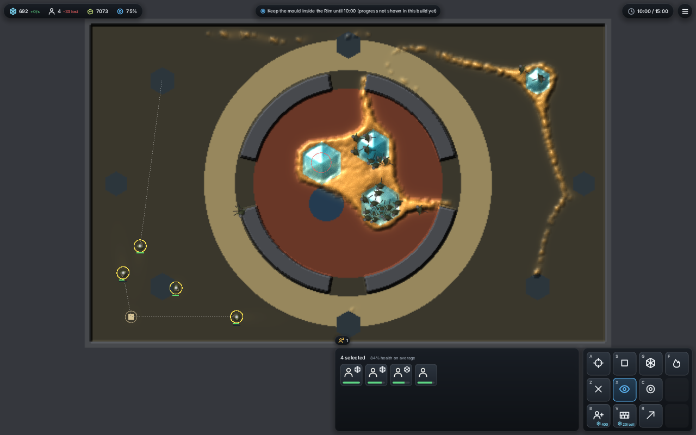

<title>Campaign Missions 1-3</title>
<meta name="claude:viewport-fit-sides" content="cover">
<link rel="stylesheet" href="https://fonts.googleapis.com/css2?family=Inter:wght@400;600&family=Space+Grotesk:wght@500;700&display=swap">
<style>
/* Layout: one column of missions; each mission is a header, its census line, then a row of three frames with counts under each. */
:root {
  --bg: #f4f5f2; --fg: #1d211c; --muted: #5b6358; --line: #d6dad2; --card: #ffffff; --accent: #b86b12; --warn: #a3321f;
  --display: "Space Grotesk", "Segoe UI", system-ui, sans-serif; --body: "Inter", system-ui, sans-serif;
}
@media (prefers-color-scheme: dark) { :root:not([data-theme="light"]) { --bg: #151813; --fg: #e5e8e1; --muted: #9aa294; --line: #2c3229; --card: #1d211b; --accent: #e09a3e; --warn: #e2775f; color-scheme: dark } }
:root[data-theme="dark"] { --bg: #151813; --fg: #e5e8e1; --muted: #9aa294; --line: #2c3229; --card: #1d211b; --accent: #e09a3e; --warn: #e2775f; color-scheme: dark }
body { background: var(--bg); color: var(--fg); font-family: var(--body); line-height: 1.55; }
main { max-width: 1180px; margin: 0 auto; padding-block: 32px 64px; padding-left: max(16px, env(safe-area-inset-left, 0px)); padding-right: max(16px, env(safe-area-inset-right, 0px)); display: grid; gap: 40px; }
h1, h2 { font-family: var(--display); text-wrap: balance; margin: 0; }
h1 { font-size: 1.9rem; }
h2 { font-size: 1.3rem; }
p { margin: 0; max-width: 70ch; }
.intro { display: grid; gap: 10px; }
.muted { color: var(--muted); }
section { display: grid; gap: 12px; border-top: 1px solid var(--line); padding-top: 20px; }
.goal { font-weight: 600; }
.census { font-variant-numeric: tabular-nums; }
.frames { display: grid; grid-template-columns: repeat(auto-fit, minmax(300px, 1fr)); gap: 16px; }
figure { margin: 0; display: grid; gap: 6px; min-width: 0; }
figure img { width: 100%; border-radius: 4px; border: 1px solid var(--line); display: block; }
figcaption { font-size: 0.85rem; font-variant-numeric: tabular-nums; }
figcaption b { font-family: var(--display); color: var(--accent); }
.note { color: var(--warn); }
</style>
<main>
  <div class="intro">
    <h1>Campaign missions 1-3</h1>
    <p>The game window playing each mission with the player AI's <b>claim</b> hand, seed 1, plain mould (the tier for each mission is not built yet). Frames are the whole map at the times shown. The counts under each frame are read from the game at that second.</p>
    <p class="muted">Census line: goal met / seeds on the CPU world, seeds 1-4, five AI styles against idle and random. Positional goals (missions 2 and 3) show their bar only on the CPU world until the GPU mould read-back lands, so the window says "progress not shown in this build yet" for them.</p>
  </div>

  <section>
    <h2>1 · Landfall (Flats)</h2>
    <p class="goal">Grow your squad to 12 and harvest 3 crystals at once.</p>
    <p class="census">Census: AI 20/20 met at 2:31-2:48, 3 stars; idle 0/4, random 0/4.</p>
    <div class="frames">
      <figure><figcaption><b>0:30</b> · soldiers 6 · bank 411 · mould 2778 · bar 25%</figcaption></figure>
      <figure><figcaption><b>1:21</b> · goal met, 3 stars · soldiers 12 · harvested 3906 · walkers killed 95</figcaption></figure>
    </div>
  </section>

  <section>
    <h2>2 · First contact (Fork)</h2>
    <p class="goal">Take back the west fork crystal and hold it for 60 s.</p>
    <p class="census">Census: AI 20/20 met at 1:42-5:31; idle 0/4, random 1/4.</p>
    <div class="frames">
      <figure><figcaption><b>0:30</b> · soldiers 13 · bank 800 · mould 1499</figcaption></figure>
      <figure><figcaption><b>1:30</b> · soldiers 25 · bank 488 · mould 1375</figcaption></figure>
      <figure><figcaption><b>3:00</b> · soldiers 28 · harvested 11218 · walkers killed 261 · mould 1394</figcaption></figure>
    </div>
  </section>

  <section>
    <h2>3 · The gaps (Rim)</h2>
    <p class="goal">Keep the mould inside the Rim until 10:00 (5% may leak).</p>
    <p class="census">Census: AI 18/20 held to 10:00-11:41, 2 stars; idle 0/4, random 0/4. Walls are not needed yet; boom meets it too.</p>
    <div class="frames">
      <figure><figcaption><b>1:00</b> · soldiers 11, 4 lost · bank 880 · mould 5525</figcaption></figure>
      <figure><figcaption><b>5:00</b> · soldiers 18, 18 lost · mould 7157 · mould at the larder</figcaption></figure>
      <figure><figcaption><b>10:00</b> · soldiers 4, 33 lost · mould 7073 · walkers killed 14218</figcaption></figure>
    </div>
    <p class="note">This window run (GPU world) shows a mould trail leaving the Rim through the north-east gap by 5:00 and reaching the larder. The window cannot score it yet; on this seed it looks like a loss, while the CPU census counts the AI holding. That gap is the first thing to check once the GPU read-back lands.</p>
  </section>
</main>
